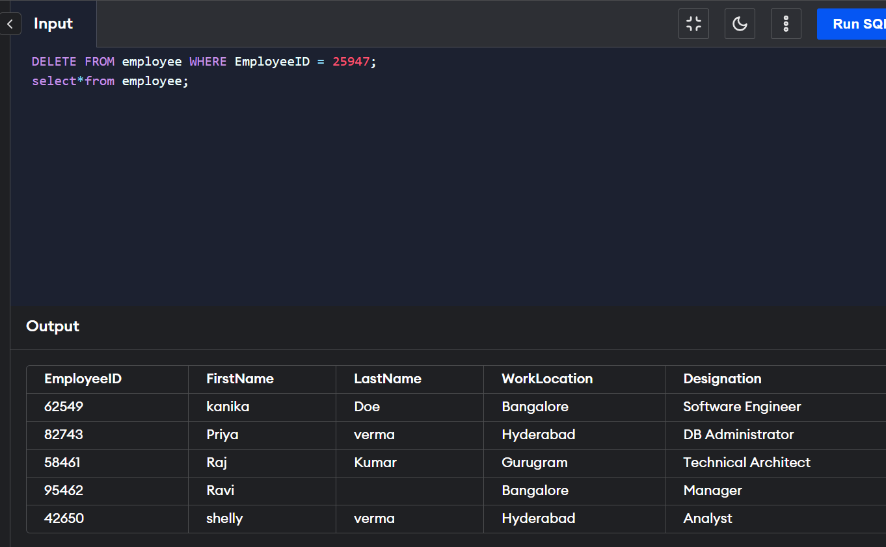

Existing records in a table can be deleted using the SQL DELETE Statement. We can delete a single record or multiple records depending on the condition we specify in the WHERE clause.
FROM table_name WHERE some_condition;
Note: We can delete single as well as multiple records depending on the condition we provide in the WHERE clause. If we omit the WHERE clause then all of the records will be deleted and the table will be empty
